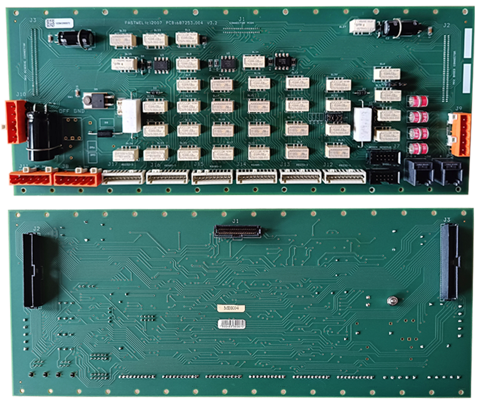

Замена МВК

Замена неисправного модуля МВК производится при выключенном питании "Основного" и "Резервного" блока на БМ, а также отключения общего питания на БП-05.
Порядок замены МВК:
- Отключить питание МИП на "Основном" и "Резервном" блоке БМ.
- Отключить питание БП-05, расположенного сзади дисплейного блока.
- В задней части БМ отвинтить 7 винтов крышки, которая скрывает плату МВК.
- Отметить и сфотографировать расположения шлейфов, проводов и кабелей на плате МВК.
- Отсоединить от платы МВК все шлейфы, провода и кабели.
- Отвинтить 12 винтов, которые крепят плату к корпусу БМ.
- Частично вытащить плату МВК из БМ под наклоном: низ платы - ближе к краю БМ, верх платы - от себя до упора.
- Отсоединить 3 шлейфа от платы МВК и отложить её в сторону.
- Взять новую плату МВК и проверить расположение перемычек на ней: их расположение должно быть аналогично расположению на старой плате МВК.
- К новой плате МВК подсоединить 3 шлейфа и установить её в БМ, действуя в обратном порядке п.п. 7,6,5,4,3.
- Включить питание БП-05.
- Включить питание МИП "Основного" и "Резервного" комплектов.